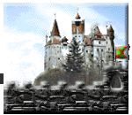

| transylvania |
| home page |
|
Vlad Dracula Biography - an intriguing figure in the fifteenth century. . Vlad Tepes Vlad Tepes (Dracula) The family tree of the Dracul dynasty. Off-site links Articles on Vlad the Impaler Dracula's Castle - History and pictures of Bran Castle which was the residence of Vlad the Impaler. Historical Dracula - the story of Vlad Tepes, or Vlad the Impaler. |
|  |